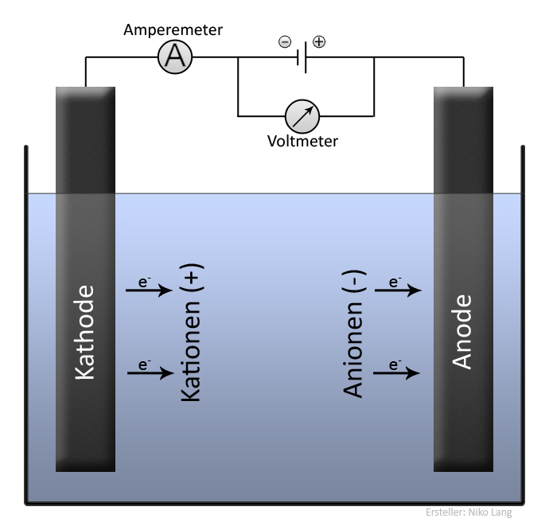
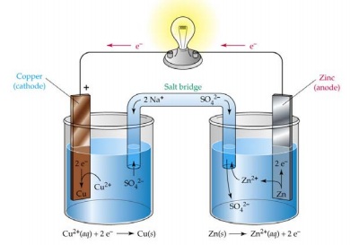

Zuurstof is een uiterst reactief element. Het probeert twee extra elektronen naar zich toe te trekken van andere atomen. De verbindingen gevormd tussen zuurstof en metalen heten metaaloxiden. Deze verbindingen kunnen spontaan worden gevormd, omdat zuurstof zo reactief is.
Daarom komen in de natuur metalen eigenlijk nooit voor in zuivere vorm, maar bijna altijd als oxide. Alleen de edele metalen, zoals goud en platina, komen in zuivere vorm voor. De metaal elementen komen voor in zogenaamde mineralen of mineraloïden. Een mineraal is een in de natuur voorkomende chemische verbinding met een kristalstructuur die niet geproduceerd is door levensprocessen. Een mineraloïde heeft geen kristalstructuur. Een rots is een aggregaat van verschillende mineralen of mineraloïden.
De aardkorst bestaat overigens voor 47% uit zuurstof die gebonden is in metaaloxiden. Hiervan zijn siliciumoxide (60%) en aluminiumoxide (15%) de meest voorkomende metaaloxiden. Velen denken dat zuurstof alleen als gas in de lucht voorkomt, maar 99.9% van alle zuurstof op aarde bevind zich dus in de aardkorst. De eerste twee miljard jaar van het bestaan van de aarde zat er zelfs helemaal geen zuurstof in de lucht. De zuurstof in de atmosfeer is het gevolg van micro-organismen.
Verbranding
Bij verhitting van een stof (brandstof) ontstaan bij het kookpunt (=ontbrandingstemperatuur) gasmoleculen. De gasmoleculen van de stof kunnen heftig reageren met de aanwezige zuurstofatomen. Dit noemen we een verbrandingsreactie. Dit is een exotherme reactie waarbij veel energie vrijkomt die vervolgens het reactieproces weer versnelt. De verbrandingsreactie volstrekt zich in een vlam. Daar is de temperatuur het hoogst. De vlam heeft een kleur. De kleur is afhankelijk van de temperatuur en de brandstof. De kleur ontstaat omdat atomen bij bepaalde energieniveaus licht van een bepaalde kleur uitstralen. De kleuren zijn karakteristiek voor de atoomsoort.
De meeste gebruikte brandstoffen zijn koolwaterstoffen, dit zijn verbindingen tussen waterstof en koolstof. Bijvoorbeeld methaan, $\ce{CH4}$. De verbrandingsreactie voor methaan is:
\[
\ce{CH4(g) + 2O2(g) ->T[t hoog] CO2(g) + 2H2O(l)}
\]
Als er te weinig zuurstof is is er sprake van een onvolledige verbranding en vormen zich roet deeltjes in de vlam die achter blijven als as. De kleur van een vlam van een koolwaterstof in de lucht met roet deeltjes is rood, oranje, geel of zelfs wit afhankelijk van de temperatuur. Bij volledige verbranding vormen zich geen roet deeltjes of as en zal de kleur van de vlam blauw zijn. Om hogere temperaturen te bereiken dan een normale verbranding in de lucht gebruikt men in een laboratorium een bunsenbrander. Met een bunsenbrander kan de gas en luchttoevoer afzonderlijk worden geregeld. Door het regelen van de luchttoevoer kan de toevoer van zuurstof worden geregeld en daarmee de temperatuur en de kleur van de vlam; hoe meer zuurstof hoe heter. Men kan bijvoorbeeld de brander ook aansluiten op zuivere zuurstof om de hoogste mogelijk temperatuur te behalen.
Naast koolwaterstoffen kunnen ook metalen als brandstof worden gebruikt. Echter de ontbrandingstemperatuur van metalen ligt veel hoger. Metaalpoeders geven mooie kleuren van de vlam. Hiervan wordt gebruik gemaakt bij vuurwerk. Ook zijn metaalpoeders als aluminium en magnesium ingezet als brandstoffen in de ruimtevaart. De verbrandingsreactie voor magnesium is:
\[
\ce{2Mg(s) + 2O2(g) ->T[t hoog] 2MgO(s)}
\]
Redoxreacties
De reactie waarbij het zuurstofatoom elektronen naar zicht toetrekt van andere atomen, zoals bij de vorming van metaaloxiden en verbranden is een zogenaamde redoxreactie.
definitie
Redoxreactie
Een redoxreactie is een reactie tussen twee atomen waarbij het ene atoom elektronen afstaat, de reductor, en het andere atoom deze elektronen opneemt, de oxidator. De reductor krijgt een hoger oxidatiegetal, het wordt geoxideerd, de oxidator krijgt een lager oxidatiegetal, het wordt gereduceerd.
definitie
Oxidatiegetal
Het oxidatiegetal van een atoom is de lading van een ion of de denkbeeldige lading van een atoom in een molecuulverbinding of samengesteld ion. Het oxidatiegetal van een element en een verbinding is altijd 0. De denkbeeldige lading is de lading als gevolg van een veronderstelde redoxreactie tussen de atomen onderling.
Metalen hebben de neiging om elektronen af te staan en zullen dus in een redoxreactie als reductor optreden. De positieve metaalionen die door een redoxreactie ontstaan zullen weer de neiging hebben om elektronen op te nemen en treden dus op als oxidator. Niet-metalen hebben de neiging om elektronen op te nemen en zullen dus als oxidator optreden in een reactie met metalen. De ontstane negatieve ionen hebben weer de neiging om elektronen af te staan en zullen dus als reductor optreden.
Of tussen atomen een redoxreactie optreedt hangt af van de sterkte van de oxidator t.o.v. de sterkte van de reductor. Zuurstof is een sterke oxidator maar zal niet reageren met goud, omdat goud een zeer zwakke reductor is. Daarom roest goud niet.
In de reactie tussen metalen en zuurstof is zuurstof altijd de oxidator en het metaal de reductor. De reactie wordt in stappen beschreven, allereerst schrijft men de zogenaamde halfreacties waarbij de reductor wordt geoxideerd en de oxidator wordt gereduceerd.
\[
ox + ne^- \rightharpoonup red \text{ reductie}
\]
\[
red \leftharpoonup ox + ne^- \text{oxidatie}
\]
Bijvoorbeeld voor de vorming van magnesiumoxide:
\[
\ce{Mg(s) -> Mg^{2+} + 2e-}
\]
\[
\ce{O2(g) + 4e- -> 2O^{2-}}
\]
We zien dat het oxidatiegetal van magnesium is 2+ en van zuurstof 2-.
De twee halfreacties telt men op, nadat men ervoor heeft gezorgd dat het aantal elektronen links en rechts van de reactiepijl gelijk zijn. In het voorbeeld vermenigvuldigen we dan de eerste reactie met 2. Na optellen en wegstrepen van de elektronen krijgen we dan:
\[
\ce{2Mg(s) + O2(g) -> 2Mg^{2+} + 2O^{2-}} = \ce{2MgO(s)}
\]
We zien dat het oxidatiegetal van magnesiumoxide is 0.
Redoxkoppel
In een redoxreactie wordt de reductor geoxideerd en de oxidator gereduceerd. Dit betekent dat de reductor overgaat in oxidator. We noemen dit de geconjugeerde oxidator. Tezamen noemen we dit een redoxkoppel. De oxidator wordt gereduceerd en gaat dus over in een reductor. We noemen dit de geconjugeerde reductor. Tezamen noemen we dit ook een redoxkoppel. Dus elke redoxreactie bestaat uit twee redoxkoppels.
In een redoxkoppel wordt de oxidator ook wel de gereduceerde vorm (meeste aantal elektronen) genoemd en de reductor de geoxideerde vorm (minste aantal elektronen).
In BINAS48 staan de redoxkoppels voor een groot aantal stoffen gerangschikt naar sterkte van de oxidator:
\[
\ce{ox + ne- \rightleftharpoons red}
\]
De sterkste oxidatoren staan bovenaan. De geconjugeerde reductor van de sterkste oxidator is de zwakste reductor. De sterkte wordt gemeten in standaard elektrodepotentiaal onder standaardomstandigheden (T=298K en p=1 bar), $E_0$ in een oplossing met een concentratie van de opgeloste deeltjes van 1.00 molL-1.
Redoxreacties tussen een oxidator en reductor zullen alleen plaatsvinden indien het potentiaalverschil tussen de oxidator en reductor groot genoeg is. Met behulp van deze tabel kunnen we het reactieverloop voorspellen:
aflopende reactie: $\Delta V > 0.3$
evenwichtsreactie: $-0.3 >\Delta V < 0.3$
geen reactie: $\Delta V < 0.3$
In een reactiemengsel kunnen meerdere oxidatoren en reductoren aanwezig zijn. De redoxreactie die plaatsvindt is altijd tussen de sterkste oxidator en sterkste reductor. Water is zowel een zwakke oxidator als zwakke reductor.
Veel oxidatoren en reductoren functioneren pas in aanwezigheid van bepaalde hulpstoffen.
Eenzelfde deeltje (dezelfde stof) kan in de redoxtabel meerdere keren voorkomen, dat wil zeggen, op verschillende hoogte, ofwel, in sterkte variërend. Let op: dit verschijnsel doet zich alleen voor bij gebruik van verschillende hulpstoffen. In principe zal altijd de sterkste reageren, maar natuurlijk onder voorwaarde dat de benodigde hulpstoffen ook echt aanwezig zijn.
Als een redoxreactie heeft plaatsgevonden kunnen de nieuw gevormde oxidator en reductor wederom een rol spelen in vervolgreacties.
Elektrolyse
definitie
Elektrolyse
Elektrolyse is een chemische reactie waarbij onder invloed van een elektrische stroom samengestelde stoffen worden ontleed tot enkelvoudige stoffen en/of andere samengestelde stoffen.
Elektrolyse bestaat uit een spanningsbron die verbonden is aan twee elektroden1 die in een zoutoplossing, elektrolyt, zijn gedompeld. De elektrode waarop de negatieve pool van de spanningsbron wordt aangesloten heet de kathode. Elektronen stromen via de kathode in de zoutoplossing. In de zoutoplossing worden deze elektronen opgenomen door de kationen (of water indien het een sterkere oxidator is). De elektrode waarop de positive pool van de spanningsbron wordt aangesloten heet anode. De anionen in de zoutoplossing staan elektronen af aan de anode (of water indien dit een sterkere reductor is). De elektroden bij een elektrolyse nemen niet deel aan de chemische reacties, maar geleiden de stroom van de negatieve pool naar de positieve pool. De elektroden zijn meestal koolstof of platina.
Opmerking: Bij een batterij is de anode de min-pool en de kathode plus-pool, de elektronen stromen dan tussen de polen van de anode naar de kathode, dus precies omgekeerd ten opzichte van de elektronenstroom in het elektrolyte.

Voorbeeld Ontledingsreactie met Elektrolyse
Water kan worden ontleedt met behulp van electrolyse.
Water is een amfolyte stof, het kan optreden als een zeer zwakke reductor en een zeer zwakke oxidator.
We nemen een elektrolyse met een zoutoplossing van kaliumsulfaat, \ce{2K+(aq) + SO4^{2-}}.
Water is een sterkere oxidator dan \ce{K+}. Aan de kathode (overschot aan elektronen) treedt de volgende halfreactie op:
\[
\ce{2H2O + 2e- -> H2 + 2OH-}
\]
Water is een sterkere reductor dan \ce{SO4^{2-}}. Aan de anode (tekort aan elektronen) treedt de volgende halfreactie op:
\[
\ce{2H2O -> O2 + 4H+ + 4e^-}
\]
De totaalreactievergelijking ontstaat door beide halfreacties samen te voegen. Daarvoor moeten we eerst zorgen dat het aantal elektronen in beide vergelijkingen gelijk zijn. We vermenigvuldigen de half reductiereactie met 2 en tellen beide vergelijkingen op en elimineren \ce{e^-}:
\[
\ce{6H2O -> O2 + 2H2 + 4H+ + 4OH-}
\]
Nu moeten we nog de zuur-base reactie van \ce{H+} en \ce{OH^-} verwerken.
\[
\ce{6H2O -> O2 + 2H2 + 4H2O}
\]
Dit wordt verder vereenvoudigd tot:
\[
\ce{2H2O -> O2 + 2H2}
\]
Batterij
Een batterij laat elektronen stromen tussen de elektroden wanneer deze met elkaar worden verbonden met een stroomdraad. De elektronen stromen van de min pool (anode) naar de plus pool (kathode).
De elektroden bevinden zich in twee gescheiden elektrolytoplossingen (waterige zoutoplossingen). Beide elektrolytoplossingen zijn met elkaar verbonden door een zogenaamde zoutbrug of poreuze wand. De functie hiervan is om een gesloten stroomkring te vormen. Echter deze verbinding is een slechte geleider en derhalve stromen elektronen altijd via de stroomdraad tussen de elektroden.
De elektrode ondergedompeld in de elektrolytoplossing heet een half cel. Beide half cellen tezamen heet elektrochemische cel. De elektronenstroom tussen de polen is het gevolg van een redox reactie. Eén van de elektrode, anode, is een stof die als reductor optreedt en elektronen afstaat en één van elektrolyten treedt op als oxidator en neemt dus elektronen op. Er moeten dan dus elektronen gaan stromen van de reductor, via de stroomdraad naar de andere elektrode, en via deze elektrode naar het elektrolyt. Vervolgens blijft de elektrische lading van het elektrolyt neutraal door het uitwisselen van positieve en negatieve ionen tussen beide elektrolyten via de zoutbrug of poreuze wand.
Voorbeeld
Een een Daniell-cel genoemd, naar J. F. Daniell, een Engelse chemicus die deze cel voor het eerst in 1836 construeerde bestaat uit twee elektrochemische cellen, een elektrode van zink, in een elektrolytoplossing van zinksulfaat, een elektrode van koper in een elektrolytoplossing van kopersulfaat, een een zoutbrug van natriumsulfaat. Zie bijgaande afbeelding.

Om te bepalen welke redoxreactie plaatsvindt moeten we van alle aanwezige stoffen de sterkste oxidator en reductor bepalen. Van de aanwezige stoffen, zijn \ce{Zn},\ce{Cu} reductoren en \ce{Zn^{2+}},\ce{Cu^{2+}} oxidatoren. We bepalen via een tabel met standaard elektrode potentialen (BINAS 48) de sterkste oxidator en reductor . De sterkste reductor is \ce{Zn} met -0.76 en de sterkste oxidator is \ce{Cu^{2+}} met 0.34. Omdat het standaard elektrode potentiaal van de oxidator groter is dan van de reductor zal een redox reactie plaatsen vinden.
De zink elektrode zal volgens de onderstaande halfreactie elektronen afstaan en zink ionen toevoegen aan het elektrolyt. De elektronen blijven achter in de zink elektrode en deze krijgt daardoor een negatieve lading.
\[
\begin{align*}
\ce{Zn -> Zn^{2+} + 2e^-}
\end{align*}
\]
Het zink lost dus op in de elektrochemische cel.
De \ce{Cu^{2+}} ionen in het elektrolyt van de koper elektrode zullen elektronen uit het koper aantrekken (vrije elektronen) volgens onderstaande halfreactie. De koper elektrode krijgt daardoor een positieve lading.
\[
\begin{align*}
\ce{Cu^{2+} + 2e^- -> Cu}
\end{align*}
\]
Er wordt koper gevormd aan het uiteinde van de elektrode in het elektrolyt.
De totaal vergelijking van de chemische reactie is:
\[
\ce{Zn(s) + Cu^{2+}(aq) -> Zn^{2+}(aq) + Cu(s)}
\]
De elektronen in de zink elektrode stromen nu naar de koper elektrode door het potentiaal verschil tussen beide elektroden. Het waargenomen potentiaalverschil noemen we de elektromotorische kracht EMK van de cel E, uitgedrukt in Volt. Voor de Daniel cell waarbij we uitgaan van 1.0 M \ce{ZnSO4} en 1.0 M \ce{CuSO4} bedraagt dit \[
E = 0.76 - -0.34 = 1.1 V
\]
We kunnen een Daniel cel schematisch als volgt noteren:
\[
\ce{ Zn(s)} | \ce{Cu^{2+}(aq)} || \ce{Cu(s)} | \ce{Cu^{2+}}
\]
waarbij $|$ de fase overgang tussen de vast elektrode en de oplossing aanduidt en $||$ de zoutbrug tussen beide oplossingen.
Roesten
De vorming van metaaloxiden gebeurt spontaan. Het proces waarbij metalen door stoffen in hun omgeving worden geoxideerd wordt ook wel corrosie genoemd. Roesten van ijzer door de invloed van zuurstof in de atmosfeer met water is daarvan een voorbeeld. Als de ijzer atomen aan het oppervlak in contact komen met zuurstof houdend water staan ze elk 2 elektronen af. Deze elektronen reduceren het water en zuurstof tot hydroxyl ionen.
\[
\ce{2Fe -> 2Fe^{2+} + 4e-}
\]
\[
\ce{O2(g) + 2H2O(l) + 4e- -> 4 OH- }
\]
dit leidt tot de vorming van ijzer(II)hydroxide:
\[
\ce{ Fe^{2+} + 2OH- -> Fe(OH)2 }
\]
Vervolgens reageert $\ce{Fe(OH)2}$ met zuurstof tot het hydraat ijzer(III)oxide en water:
\[
\ce{4Fe(OH)2 + O2 -> (2Fe2O3 . xH2O) + 4H2O}
\]
Ijzer(III)oxide is roest en heeft een roodbruine kleur. Ijzeroxide ($\ce{FeO}$) heeft een zwarte kleur. Roest ontbindt het metaal steeds verder tot uiteindelijk alleen roest overblijft.